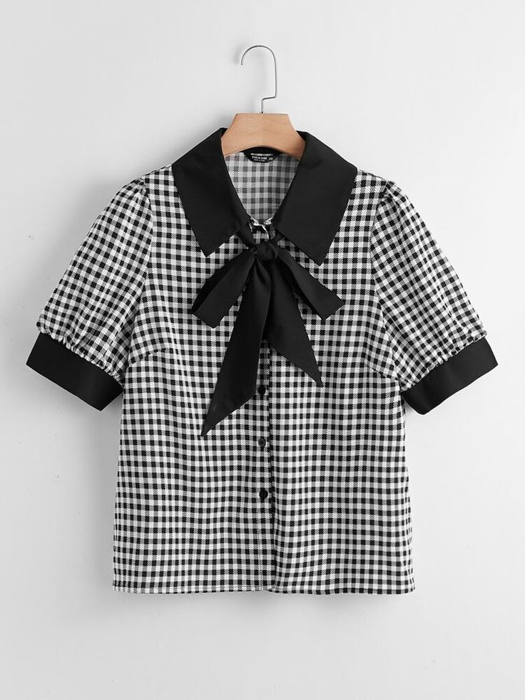
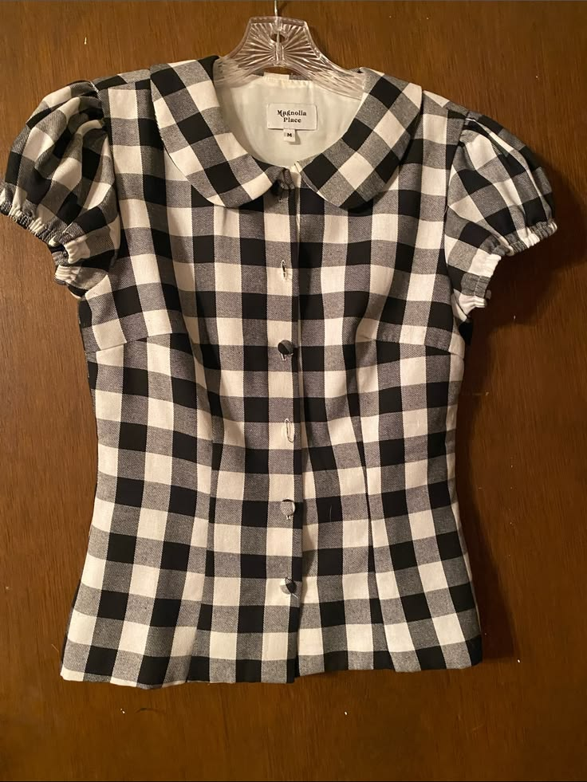

My Experiences with Garments
My favourite garment is a blouse.
To be specific, these two black and white gingham-patterned blouse.
They are made of cotton and polyester fabric with nice stiches.


I like these garment due to the fact that it has a comfortable fabric and not tight.
They also have a nice appearance that can be worn for special events.